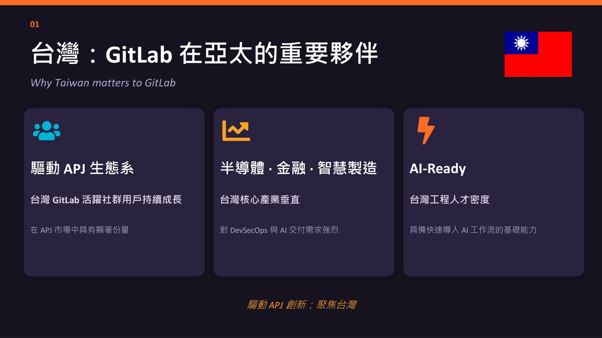
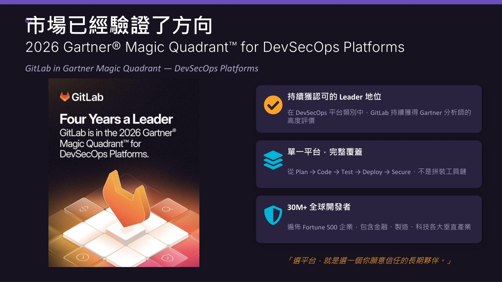
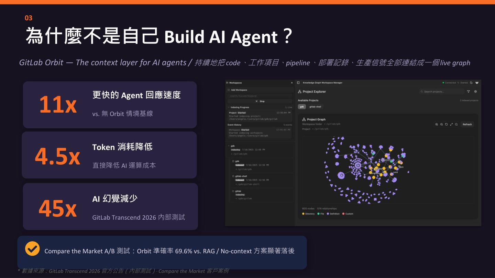
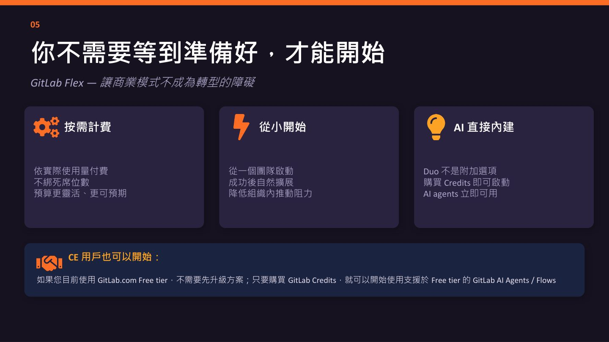

摘要
GitLab分享台灣在其亞太（APJ）市場策略中的重要地位，並介紹GitLab在2026 Gartner Magic Quadrant DevSecOps平台類別中的領導地位。演講重點說明GitLab的AI情境層Orbit如何大幅提升AI Agent的回應速度、降低Token消耗與AI幻覺，並透過彈性計費模式GitLab Flex，降低企業導入AI驅動軟體交付的門檻。
重點整理
- 台灣被視為GitLab在APJ市場的重要夥伴：活躍社群用戶持續成長，且半導體、金融、智慧製造等核心產業對DevSecOps與AI交付有強烈需求。
- GitLab於2026 Gartner Magic Quadrant DevSecOps Platforms類別中持續獲評為Leader，提供從Plan到Secure的單一平台，服務全球超過3000萬名開發者，涵蓋Fortune 500各大垂直產業。
- GitLab Orbit作為AI Agent的情境層(context layer)，將程式碼、工作項目、pipeline、部署紀錄與生產訊號串連成即時圖譜(live graph)：相較無Orbit的基線情境，可提升11倍Agent回應速度、降低4.5倍Token消耗、減少45倍AI幻覺（依GitLab Transcend 2026內部測試）。
- 導入效益涵蓋交付速度提升（減少等待、來回與工具切換）、安全左移（在commit階段即發現漏洞並自動執行Pipeline政策）、以及以統一平台取代碎片化工具鏈，消除團隊間的context switching。
- GitLab Flex提供按需計費、不綁定席位數的彈性商業模式，企業可以從單一團隊開始導入，成功後再自然擴展；即使是現有GitLab.com Free tier使用者，也能透過購買Credits啟用支援於Free tier的AI Agents/Flows。
重點圖片／架構圖




台灣在GitLab亞太策略中的角色
演講指出台灣是GitLab在亞太（APJ）市場的重要夥伴，台灣的活躍社群用戶持續成長，在APJ市場中具有顯著份量，能驅動整個APJ生態系的創新。台灣核心產業如半導體、金融、智慧製造對DevSecOps與AI交付的需求強烈，加上台灣工程人才密度高，具備快速導入AI工作流的基礎能力，被視為「AI-Ready」的市場。
市場地位：Gartner Magic Quadrant的驗證
GitLab在2026 Gartner Magic Quadrant for DevSecOps Platforms中持續獲得Leader地位的認可，提供從Plan到Code、Test、Deploy、Secure的單一平台，而非拼裝式工具鏈。GitLab目前服務全球超過3000萬名開發者，遍佈Fortune 500企業，橫跨金融、製造、科技等各大垂直產業，演講強調「選平台，就是選一個你願意信任的長期夥伴」。
為何不自建AI Agent：GitLab Orbit情境層的價值
演講說明為何企業不應自行打造AI Agent，而應仰賴GitLab Orbit作為AI Agent的情境層(context layer)。Orbit會持續將程式碼、工作項目、Pipeline、部署紀錄與生產訊號全部連結成一個即時圖譜(live graph)，讓AI Agent能取得完整且即時的上下文。根據GitLab Transcend 2026的內部測試，相較於沒有Orbit的基線情境，使用Orbit可以帶來11倍更快的Agent回應速度、4.5倍的Token消耗降低（直接降低AI運算成本），以及45倍的AI幻覺減少；在Compare the Market的A/B測試中，Orbit的準確率達69.6%，顯著優於RAG或無情境（No-context）方案。
落地效益：從交付速度到安全左移
演講說明GitLab Platform結合Orbit與GitLab Duo Agent Platform（DAP）後，能為企業帶來實際業務成果：交付速度提升，讓從想法到程式碼、審查、發布的每個環節都能加速，減少等待、來回與工具切換；安全前移，讓AI能在commit階段就發現漏洞，並透過Pipeline執行政策自動執行，大幅降低合規成本；以統一平台取代碎片化的工具孤島，減少團隊間的context switching，讓共享的AI情境使整個團隊對齊；並讓AI的使用範疇從個人層級（如個人使用Copilot）擴展到整個工程組織共享的AI工作流，實現規模化的交付能力。
GitLab Flex：降低導入門檻的彈性商業模式
為了讓企業不需要等到「準備好」才能開始導入AI，GitLab推出彈性商業模式GitLab Flex：依實際使用量計費、不綁定席位數，讓預算更靈活可預期；企業可以從一個團隊開始啟動，成功後再自然擴展，降低組織內部推動的阻力；GitLab Duo並非附加選項，而是直接內建於平台中，只要購買Credits即可立即啟用AI Agents。演講也特別提到，即使是目前使用GitLab.com Free tier的使用者，也不需要先升級方案，只要購買GitLab Credits，就能開始使用支援於Free tier的GitLab AI Agents/Flows。